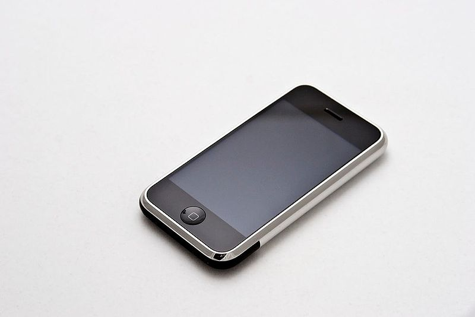

1990 skapas www eller World Wide Web som det står för. Det var en man som hette Tim Berners-Lee som skapade den första webbplatsen för ett forskningscentrum han arbetade på.
Cookies stöter du ofta på när du surfar på nätet. Många tror att det är de informations-rutor en vanligtvis klickar bort innan en fortsätter surfa vidare på sidan. Men vad är cookies egentligen?
Adobe Flash är ett datorprogram du kan använda för att skapa animerade bilder, video och dataspel. Nu började webbutvecklare använda sig av Flash och webben fick en helt ny stil. Det var möjligt att se animerade videor och bilder på en webbsida
Google.com, den mest populära sökmotorn som nästan alla i världen känner till, föddes detta år.
Ajax är ett program som finns till för att effektivisera konstruktionen av applikationer. Namnet står för Asynchronous JavaScript and XML, och det är ett namn som inkluderar flera olika tekniker.
 2004-2005
2004-2005
Facebook är ett socialt nätverk där en skapar en personlig profil med information om en själv. Därefter kan en “bli vänner” med andra personer som skapat profiler.
År 2005 är det år då Piratpartiet skapas. Frågan är varför och hur?
Twitter, Spotify, Iphone, like-knappen, surfplattan, instagram. Nu kunde en användare bara skicka iväg några meningar direkt ut till sina följare.
Hur kommer internet att se ut i framtiden? Det är svårt säga, men här är några spekulationer
Internet får växtvärk
Twitter 2006
Twitter kom som en storm och blev som ett substitut för bloggar. Nu kunde en användare bara skicka iväg några meningar direkt ut till dess följare. Twitter som har ett namn som ska påminna om fågelkvitter är en mikroblogg. Om du inte känner till Twitter så är det en social plattform där en kan skriva tweets(texten som skickas ut) och läsa andras. Här använder en sig också av de symboler en kan finna på andra sociala medier, symbolerna kan då vara till exmpel #(hashtagg).
Spotify 2006
Kanske kan en säga att 2006 också är musikens år, då det svenskaföretaget Spotify grundades. Daniel Ek och Martin Lorentzon grundade Spotify med hjälp av samarbeten med många av världens största skivbolag. Spotify gör att man kan ta del av musik och podcasts genom deras musiktjänst online. Nu finns Spotifys tjänster i cirka 61 länder och har cirka 140 miljoner användare och växer fortfarande.
iPhone 2007
Nu lanserades den första iPhonen av Apple och presenterades av den dåvarande VDn Steve Jobs och blev utvald som årets uppfinning 2007 av ett amerikanskt tidskrifts magasin Time magazine.
Så här såg den första Iphonen ut.

Bild av Carl Berkeley från Wikipedia, 01-07-2009. Ikoner på sidan av LMFAO, 08-10-2012,från Wikipedia
Like-knappen 2009
Nu behöver vi inte skriva att vi gillar någons inlägg eller profilbild på Facebook, utan nu kan vi bara göra det med ett klick! Det är Facebook som startar med denna nya geniala lösning som sedan kom att användas av andra sociala medie plattformar, det vi!
Surfplattan 2010
Redan innan iPhonen lanserades hade tankar om en Surfplatta som kunde läsa av handskrift och ha en touchskärm funnits hos flera stora företag, och det hade funnits många olika mindre lyckade försök. Det är Apples iPad som tar världen med storm 2010, och används främst till att se på film och är även vanligt att de används till pedagogiska syften.
Instagram 2010
Att ta del av andras liv har aldrig varit så lätt, nu men Instagram kan man bara genom att följa en känd eller okänd person ta del av bilder från hens vardag. Instagram har inte bara gjort världen mindre genom sociala medier utan har även skapat nya yrken. Att bli känd genom Instagram är idag vanligt, och det finns även de som har sina "live program" på sin Instagramprofil. Här använder man # hashtag och like knappen precis som på twitter och facebook och har kommit till att bli ett av det mest använda sociala media applikation.
Snapchat 2011
Snapchat kommer som en tonåringsrival mot de sociala medier som redan var i användning. Nu kan man ha en mera direkt kontakt med de vänner har på Snapchat genom att skicka bilder eller videos som raderas direkt. Inget sparas och du kommunicerar nu bara genom bilder eller videor där man kan använda sig av olika filter, skriva text eller måla över skärmen. Vissa vill påstår att Facebook och Instagram nu känns lite gamla och rostiga och Snapchat tagit den ledande rollen, i alla fall för de unga. Enligt en undersökning är det 70 procent av 12 till 25-åriga svenskar som använder Snapchat men det är inte lika vanligt för den över 35.